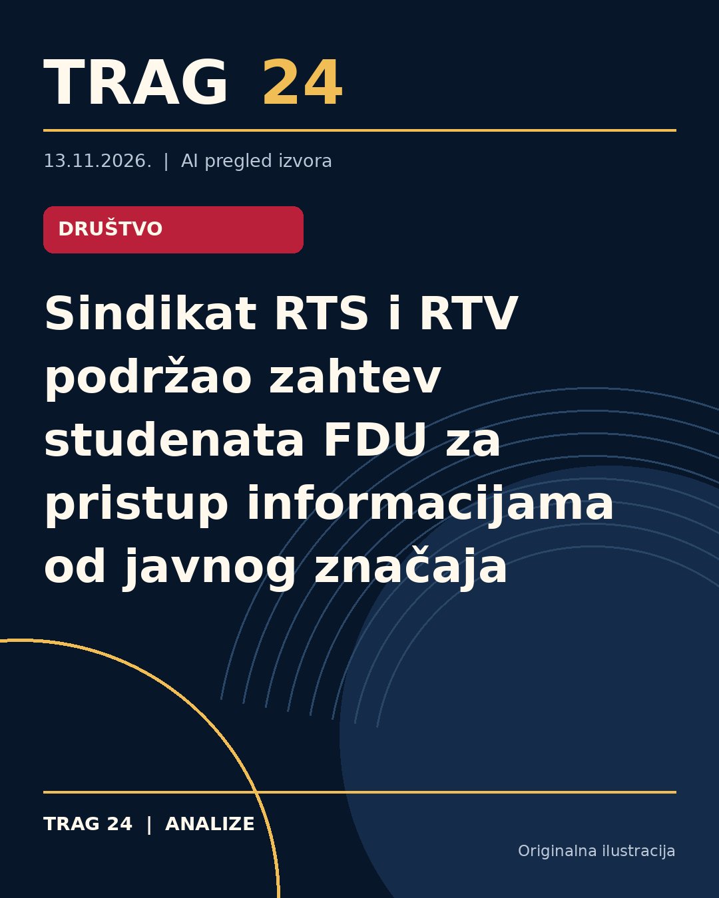

Sindikat RTS i RTV podržao zahtev studenata FDU za pristup informacijama od javnog značaja

ŠTA SE DOGODILO
Sindikat Radio-televizije Srbije (RTS) „Nezavisnost“ i Nezavisni strukovni sindikat Radio-televizije Vojvodine (RTV) i filmskih radnika Srbije javno su podržali zahtev studenata Fakulteta dramskih umetnosti (FDU) u Beogradu za pristup informacijama od javnog značaja. Studenti su, uz blokadu fakulteta, 3. novembra uputili RTS-u zahtev za dobijanje profesionalnih podataka o zaposlenima, uključujući njihove kvalifikacije i postupke izbora na određene funkcije.
HRONOLOGIJA
Do zahteva je došlo tokom studenstke blokade FDU, koja traje nepoznato koliko pre datuma zahteva 3. novembra. Na isti dan studenti su zahtev objavili i na svom Instagram profilu. Sindikati RTS i RTV su se danas oglasili izražavajući podršku tom zahtevu. Teksti ne navode dalje vremenske detalje događaja ili planove dalje realizacije.
ŠTA NAVODE IZVORI
Iz sindikata RTS i RTV navode da javni medijski servis u svom radu mora da ispunjava javni interes i odgovara javnosti, što se između ostalog ostvaruje pravovremenim ispunjavanjem zakonskih obaveza vezanih za slobodan pristup informacijama od javnog značaja. Studenti su naglasili da zahtevaju samo profesionalne informacije o radnicima RTS, konkretno kvalifikacije i procedure izbora na funkcije, bez traženja drugih podataka.
ŠTA JE POTVRĐENO
Potvrđeno je da su studenti FDU u blokadi poslali zahtev za pristup informacijama RTS-u 3. novembra 2023. Potvrđeno je i da su sindikati RTS i RTV izrazili podršku tom zahtevu, pozivajući se na zakon o pristupu informacijama od javnog značaja kao osnovu za ispunjavanje zahteva. Svi izvori saglasni su u izveštavanju o ovim činjenicama bez značajnih odstupanja.
ŠTA NIJE POTVRĐENO
Nije potvrđeno da li je RTS odgovorio na zahtev studenata ili da li je došlo do izmene u pružanju traženih informacija. Takođe, nije poznato koliko će trajati blokada fakulteta niti da li postoje dalji koraci u vezi ovog zahteva ili podrške sindikata. Izvori ne navode stavove drugih aktera ili moguće posledice po RTS ili FDU.
ŠTA OSTАJE OTVORENO: Ostaje nepoznato kako će RTS konkretno postupiti povodom zahteva studenata, kao i da li će biti objavljeni traženi podaci. Takođe, nije poznato da li podrška sindikata može uticati na dalji tok procesa oko zahteva za pristup informacijama ili na tok blokade na FDU. Nejasno je i da li će se ova tema dodatno razvijati u javnim diskusijama ili institucionalnim promenama.
Izvori
- https://insajder.net/prenosimo/sindikati-rts-i-rtv-podrzali-zahtev-studenata-fdu-za-pristup-informacijama-od-javnog-znacaja
- https://n1info.rs/vesti/sindikat-rts-rtv-fdu-studenti/
- https://www.danas.rs/vesti/drustvo/sindikati-rts-i-rtv-podrzali-zahtev-studenata-fdu-za-pristup-informacijama-od-javnog-znacaja/
Ova analiza je pripremljena uz pomoć veštačke inteligencije na osnovu javno dostupnih izvora. Navodi izvora nisu nužno nezavisno potvrđeni.